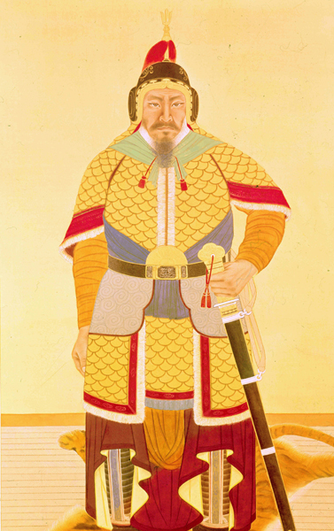
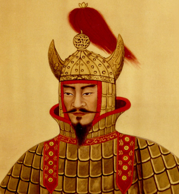
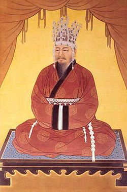
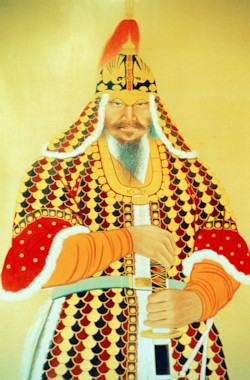

이순신

이순신은 조선 중기의 무신이다. 임진왜란 당시 조선 수군을 통솔했던 제독이자 구국영웅으로, 자는 여해(汝諧)이며, 시호는 충무(忠武)[6]이다.
강감찬
고려시대의 명신. 여요전쟁 당시 거란의 대군을 몰살해버린 귀주 대첩을 주도한 문신(文臣)으로, 동아시아 역사 전체에 영향을 미친 구국영웅이자 정치적으로도 고려사 리즈시절을 이끈 현종의 치세에 큰 도움을 준 명재상이였다. 하다.
을지문덕
고구려 영양왕 대에 활약했던 전쟁 영웅으로 고구려-수 전쟁 당시에 고구려를 침략해온 수양제로부터 고구려를 지켜낸 불세출의 명장으로 유명하다.
김유신
신라 상대~중대의 무장. 진평왕부터 문무왕까지 80년에 가까운 기간 동안 살며 5명의 신라 왕을 섬겼다. 옛 금관국 구형왕 김구해의 직계 후손이며 골품은 진골이었다.
권율
조선 중기의 문신[3], 장군. 본관 안동. 자 언신(彦愼). 호 만취당(晩翠堂)·모악(暮嶽). 시호 충장(忠莊)이다.